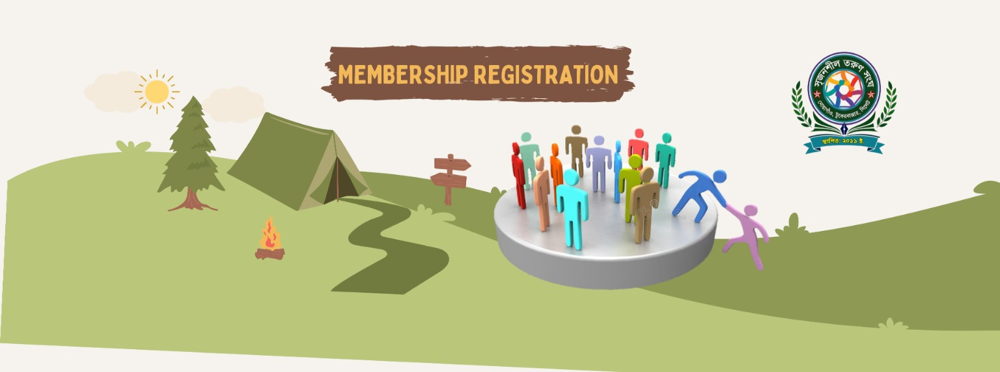

১২
সদস্য আবেদন
অংশগ্রহণ থেকে পরিবর্তনের পথে
একটি সংগঠনের শক্তি শুধু তার নিয়ম-কাঠামো বা কার্যক্রমে নয়; বরং তার সবচেয়ে বড় শক্তি হলো তার সদস্যরা। একজন সদস্য হওয়া মানে শুধু একটি তালিকায় নিজের নাম যুক্ত করা নয়—এটি একটি মূল্যবোধ, দায়িত্ব ও ইতিবাচক পরিবর্তনের সঙ্গে নিজেকে যুক্ত করার অঙ্গীকার।
আপনি যদি মনে করেন, আপনার সময়, মেধা, অভিজ্ঞতা ও সামর্থ্য কোনো ভালো কাজে অবদান রাখতে পারে, তাহলে সদস্য হওয়ার আবেদন হতে পারে সেই পথচলার প্রথম ধাপ।
সদস্য হওয়ার আগে কিছু বিষয় মনে রাখা জরুরি
- সংগঠনের লক্ষ্য, উদ্দেশ্য ও নীতিমালা ভালোভাবে জানুন।
- নিজের আগ্রহ, দক্ষতা ও সময়ের সঙ্গে সামঞ্জস্য রেখে দায়িত্ব নেওয়ার মানসিকতা তৈরি করুন।
- আবেদনপত্রে সঠিক ও প্রয়োজনীয় তথ্য প্রদান করুন।
- সদস্য হওয়ার পর নিয়মিত অংশগ্রহণ ও দায়িত্বশীলতার মাধ্যমে নিজের ভূমিকা পালন করুন।
- মতের ভিন্নতাকে সম্মান করে দলগতভাবে কাজ করার মানসিকতা রাখুন।
আপনার অংশগ্রহণ হয়তো আজ ছোট মনে হতে পারে, কিন্তু সম্মিলিতভাবে সেই ছোট ছোট অবদানই গড়ে তুলতে পারে একটি শক্তিশালী, মানবিক ও কার্যকর সংগঠন।
সদস্যপদের আবেদন ফি
১,০০০ টাকাসাধারণ সদস্য
১,২০০ টাকাপ্রবাসী সদস্য
২,০০০ টাকাদাতা সদস্য
১০০ টাকাজুনিয়র সদস্য